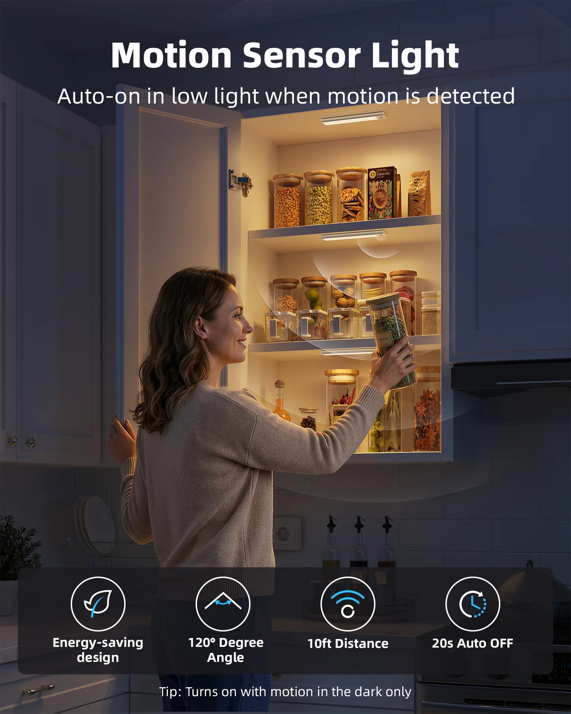
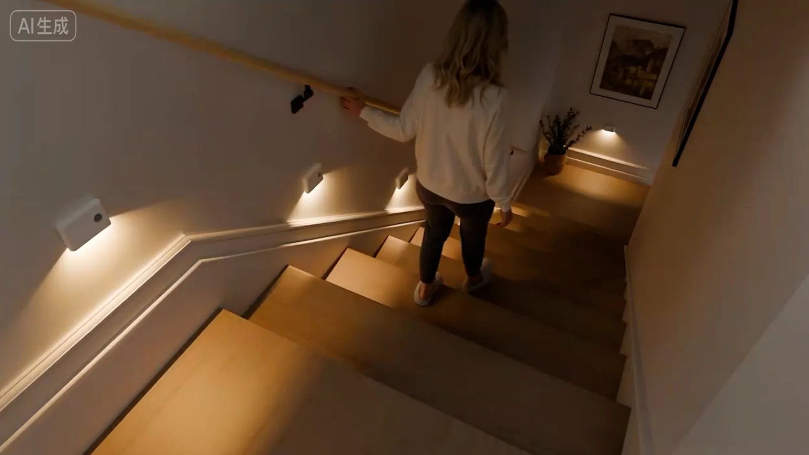
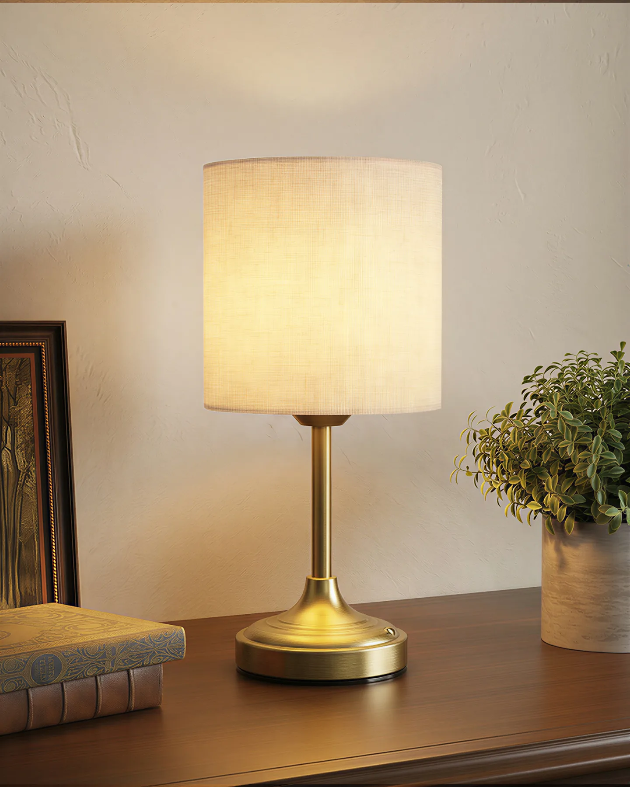
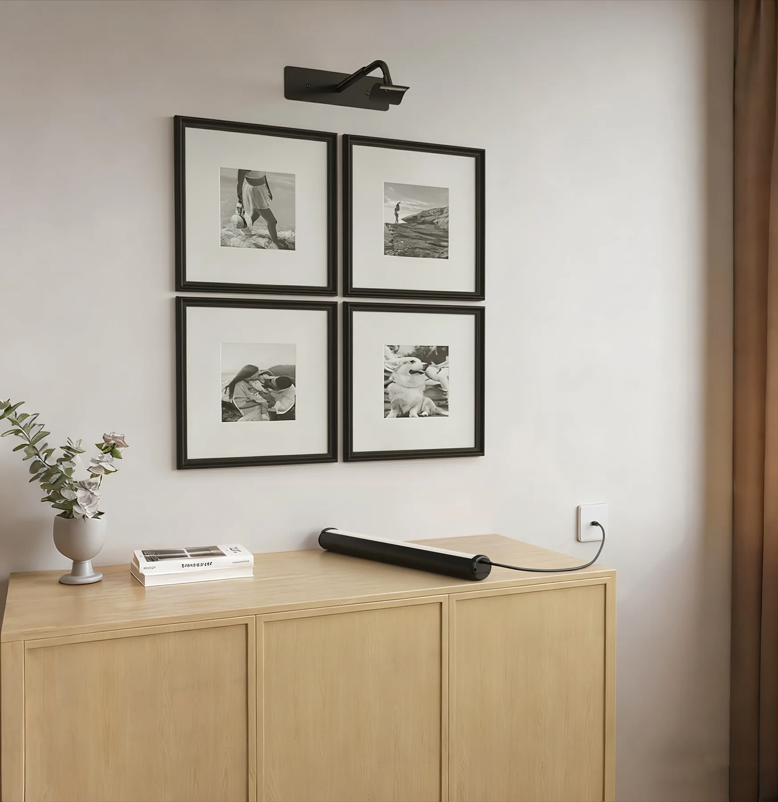

橱柜灯 / 灯带
UCL01 2.0、UCL02—UCL08、LL01 Lite、Lite 2.0、Lite37、Zeus
主图 · A+ · 安装 · 多尺寸OVERSEAS E-COMMERCE · AMAZON LISTING / A+
围绕橱柜灯、感应灯、台灯、壁灯与画灯，完整呈现商品主图、功能辅图、A+、场景渲染、安装说明与动态素材，建立符合海外购物路径的内容体系。




01 / COMPLETE PRODUCT SYSTEMS
不以单张封面代替完整项目。每个案例依次展示商品主图、功能辅图、A+ 模块或动态素材，保留完整阅读链路。
02 / PRODUCT MATRIX
从照明结构、使用场景到尺寸与安装方式，项目覆盖不同产品形态及内容需求。以下为源文件中的产品矩阵。
UCL01 2.0、UCL02—UCL08、LL01 Lite、Lite 2.0、Lite37、Zeus
主图 · A+ · 安装 · 多尺寸NL01、NL01 非联动版、TL04、TL08、Hermes、Ceres
动作逻辑 · 场景帧 · 续航表达TL01、Alice、Alice RGB、Athena、Freya、Hera、Juno、Odin、Sol、Sol Plus
材质 · 灯光 · 家居场景PL01、PL02、PL04、WL02、WL05、挂画与安装模块
空间搭配 · 尺寸 · 安装ARES、ECL01、DL01、Venus、VL01、Polaris、Metis、Superflora、Titan
系列化 · 版本差异 · 素材管理把分散的渲染、拍摄、功能与规格素材，整理为可复用的页面模块。
信息架构 · 视觉规范 · 多端适配03 / WORKING METHOD
产品站设计的重点不是堆叠效果图，而是决定用户先看到什么、如何理解功能、最终如何建立信任。
区分核心功能、规格参数、使用场景与安装逻辑，建立信息优先级。
统一场景色调、产品角度、文字层级与图标语言，让同系列内容保持一致。
主图负责快速理解，A+ 负责完整解释；同一卖点在不同版位中使用不同信息密度。
用视频分镜、动作路径和使用前后对比，说明感应、调光与安装等动态功能。
PRODUCT SITE PORTFOLIO